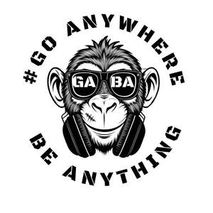
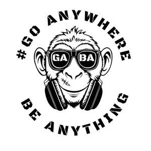

Trade Mark Journal No.2025/024 13 June 2025
UK00004205089 17 May 2025 (18,25)
Mark 1

Mark 2

- Class 18
- Tote bags; Crossbody bags; Cross-body bags; Duffle bags; Drawstring bags; Duffel bags; Canvas bags; Wrist mounted carryall bags; Handbag straps; Duffel bags for travel; Bags; Toiletry bags; Drawstring pouches; Messenger bags; Beach bags; Cloth bags; Shoulder bags; Satchels; Luggage bags; Luggage, bags, wallets and other carriers; Wash bags for carrying toiletries; Handbags, purses and wallets; Kit bags; Weekend bags; Trolley duffels; Makeup bags; Garment bags for travel made of leather; Waterproof bags; Wheeled bags; Camping bags; Bags (Garment -) for travel; Casual bags; Travel bags; Bags for travel; Straps for handbags; Gym bags; Toiletry bags sold empty; Hand bags; Ruck sacks; Towelling bags; Holdalls; Rucksacks; Game bags; Rucksacks on castors; Sporrans; Rucksacks for mountaineers; Carry-on bags.
- Class 25
- Clothes; Clothing; Swaddling clothes; Beach clothes; Denims [clothing]; Work clothes; Jackets [clothing]; Shorts [clothing]; Clothes for sports; Aprons [clothing]; Drawers [clothing]; Drawers as clothing; Jackets (Stuff -) [clothing]; Stuff jackets [clothing]; Clothes for sport; Linen clothing; Headbands [clothing]; Headbands for clothing; Gloves [clothing]; Gloves as clothing; Bottoms [clothing]; Capes (clothing); Jerseys [clothing]; Trunks being clothing; Maternity clothing; Clothing for leisure wear; Layettes [clothing]; Clothing layettes; Oilskins [clothing]; Hoods [clothing]; Gabardines [clothing]; Ready-to-wear clothing; Bodies [clothing]; Belts [clothing]; Belts for clothing; Tops [clothing]; Playsuits [clothing]; Collars [clothing]; Pockets for clothing; Paper hats for use as clothing items; Fabric belts [clothing]; Mitts [clothing]; Hats (Paper -) [clothing]; Paper hats [clothing]; Beach clothing; Belts (Money -) [clothing]; Money belts [clothing]; Ready-made clothing; Embroidered clothing; Knitted clothing; Casual clothing; Sport shirts; Sport shoes; Sports garments; Clothing for sports; Sports clothing; Sports clothing [other than golf gloves]; Sport coats; Sport stockings; Sports jerseys and breeches for sports; Boots for sport; Jackets being sports clothing; Sports bibs; Sports pants; Sports jackets; Sports jerseys; Sports wear; Sports footwear; Sports shoes; Sports shirts; Leather clothing; Clothing of leather; Leather (Clothing of -); Sports vests; Articles of sports clothing; Cap visors; Peaks (Cap -); Cap peaks; Caps; Caps [headwear]; Caps being headwear; Caps with visors; Skull caps; Bucket caps; Baseball caps; Baseball caps and hats; Peaked caps; Knot caps; Garrison caps; Flat caps; Swimming caps [bathing caps]; Swim caps; Sports caps and hats; Sports caps; Golf caps; Cycling caps; Swimming caps; Waterpolo caps; Beanie hats; Bobble hats; Visors [headwear]; Visors being headwear; Top hats; Baseball hats; Thermal headgear; Headgear for wear; Peaked headwear; Vest tops; Bucket hats; Yoga pants; Yoga socks; Yoga shirts; Yoga bottoms; Yoga tops; Gym shorts; Jogging pants; Gym suits; Dance clothing; Clothing for gymnastics; Clothing for wear in judo practices; Warm-up pants; Lounge pants; Lounging robes; Rugby shorts; Scrimmage vests; Rugby shirts; Guernseys; Rugby jerseys; Rugby tops; Greatcoats; Ski boot bags; Parts of clothing, footwear and headgear; Windproof clothing; Wristbands [clothing]; Rainproof clothing; Waterproof clothing; Leisure clothing; Athletic clothing; Weatherproof clothing; Clothing for cycling; Water-resistant clothing; Triathlon clothing; Thermal clothing; Men's clothing; Sports socks; Sports over uniforms; Coats (Top -); Sports bras; Sports singlets; Dance costumes; Swimming costumes.
GABA LTD